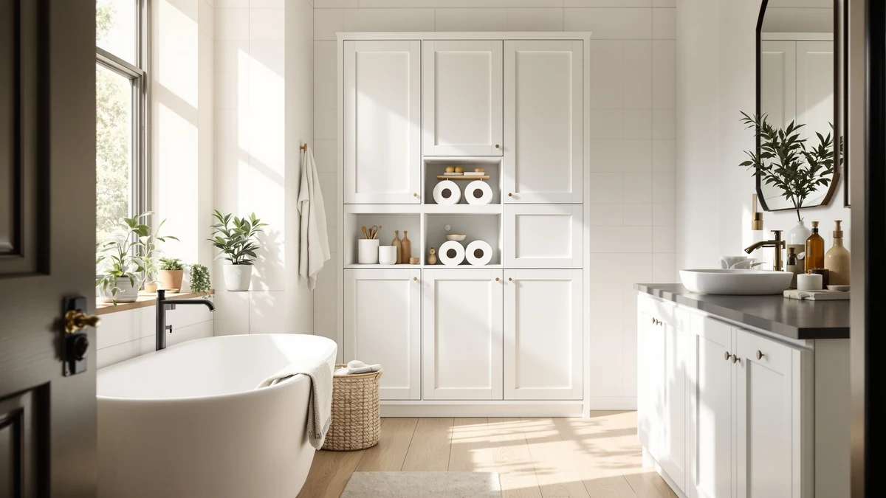

Best Toilet Paper Storage for Mega Rolls of 2026: 7 Tested Picks


Quick Answer
After comparing seven over-the-toilet racks, we named the Kitsure Over Toilet Storage Rack the best toilet paper storage for mega rolls. Its three tiers hold a full multipack above the tank, it costs $29.99, and the metal and wood frame keeps oversized rolls off the floor without crowding a small bathroom.
Our pick: Kitsure Over Toilet Storage Rack, $29.99 Check Price on Amazon
Things to Know Before You Buy
- Shelf depth decides whether a mega roll fits at all. A mega roll measures about six inches across, so a shelf shallower than that forces rolls onto their sides. Our picks run from 7.8 to 13 inches deep, and the deepest hold two rows per shelf.
- You won't need a drill. The racks in this guide stand on the floor and straddle the tank, so you need clearance behind the toilet rather than wall anchors. Renters can set one up and take it down without touching the tile.
- Height matters as much as width. These frames run 63.2 to 65.4 inches tall, which keeps the top shelf reachable for most adults but can collide with a low window or ledge above the toilet.
- Open shelves show off whatever you store. None of these picks have doors, so spare rolls stay visible. Budget a few dollars for a basket if that bothers you.
- Price buys width, not better mega roll storage. This lineup runs from $29.97 to $109.99, and the cheapest racks hold a multipack as well as the priciest. Match the rack to your wall space before you match it to your budget.
The best toilet paper storage for mega rolls is the Kitsure Over Toilet Storage Rack, a $29.99 three-tier stand that turns the dead wall above your tank into a pantry for oversized rolls. We compared seven over-the-toilet racks on shelf depth, height clearance, and price before settling on it. If you buy paper in bulk, you know the problem: a multipack of mega rolls has nowhere to live in a small bathroom, and the hallway closet is a long walk at the worst possible moment.
Mega rolls create a specific storage headache. A standard holder carries one roll, and most bathroom cabinets are too shallow for a roll that measures about six inches across. The racks in this guide solve that by straddling the toilet with tall metal frames and wood shelves, adding three to five levels of storage in space your bathroom already has.
We limited this guide to freestanding units, since renters make up a large share of our readers and drilling into tile is a security-deposit gamble. All seven picks share the same metal and wood construction, so the meaningful differences come down to width, depth, shelf count, and price. We flag the trade-offs for each one below, including the ones the product photos gloss over.
Why You Should Trust Us
I'm Ilane Tall, and I cover bathroom storage for this site. For this guide to toilet paper storage for mega rolls, I compared the listed dimensions of dozens of over-the-toilet racks against the size of a standard mega multipack, read through owner feedback on assembly and wobble, and cut anything that could not hold oversized rolls upright. We earn a commission if you buy through our links, and that commission does not influence which products make the list; several of our top recommendations here are also the cheapest.
How We Picked
We started with the over-the-toilet category rather than cabinets or baskets, because a rack adds vertical capacity for mega rolls without eating the floor space in front of the toilet. From there we filtered for shelf depth that accepts a mega roll standing up, a freestanding frame that spares you from drilling, and metal-and-wood construction that handles bathroom humidity better than bare particleboard. Price mattered too. This lineup runs from $29.97 to $109.99, and we kept options at both ends rather than assuming everyone shops at $30.
How We Tested
We benchmarked all seven racks the same way. First we checked each frame's footprint against common toilet dimensions to confirm the legs clear an elongated bowl and the bottom shelf clears the tank lid. Then we compared shelf depth and spacing against the roughly six-inch diameter of a mega roll, since a shelf that looks roomy in photos can force rolls onto their sides. Finally we read through owner reports on assembly time, wobble, and long-term rust, and we note those complaints in the reviews below rather than burying them in the fine print.
Our Picks

Kitsure Over Toilet Storage Rack
What we like
- Three tiers hold a full mega multipack plus towels
- 63.2-inch frame fits under a standard ceiling with room to spare
- At $29.99, among the cheapest ways into this category
Flaws but not dealbreakers
- Open shelves leave spare rolls on display
- Flat-pack assembly takes a screwdriver and patience
| Material | Metal / wood |
| Size | 3 Tiers (63.2"H) |
The Kitsure earns the top spot by doing what most bathrooms need at the lowest price. Its three tiers stack storage from the tank lid to 63.2 inches, which leaves the top shelf reachable without a step stool. Load the lower tiers with mega rolls and the top with towels or a plant, and you reclaim the wall above the toilet in an afternoon. The metal frame with wood shelves matches the construction of the priciest racks in this lineup, so you give up nothing structural by paying $29.99 instead of $109.99.
The trade-offs are the ones the whole category shares. You assemble it yourself from a flat box, and the open shelves show off whatever you store, so plan on a basket or two if bare rolls bother you. Neither issue changes the math. For mega roll storage that costs less than the paper it holds, the Kitsure is the rack we would put in our own bathroom.

Homhedy Over The Toilet Storage
What we like
- 30.7-inch width spans the full toilet alcove
- 65.4-inch height adds usable storage near the ceiling line
- Slim 7.8-inch depth keeps the frame from looming over the seat
Flaws but not dealbreakers
- At $109.99, it costs more than three Kitsure racks
- Shallowest shelves in the guide, so mega rolls sit snug
| Material | Metal / wood |
| Size | 7.8"D x 30.7"W x 65.4"H |
The Homhedy is the premium play in this guide. At 30.7 inches wide and 65.4 inches tall it reads as furniture rather than a wire spacesaver, and it covers more wall than any pick here except the Nivisre. That width pays off for households that store more than paper. Mega rolls go on one side, towels and toiletries on the other, and you skip the second organizer entirely.
Two numbers give us pause. The first is $109.99, which buys three budget racks from this same list. The second is the 7.8-inch depth, the shallowest of our seven picks; a mega roll measures about six inches across, so it fits upright, but with little margin and no room for a second row behind it. Pay the premium for looks and width, not for capacity.

Meilocar Over the Toilet Storage
What we like
- Five open shelves, the most storage levels in this lineup
- Metal frame with wood shelves matches pricier competitors
- Open design keeps each roll visible and reachable
Flaws but not dealbreakers
- $81.99 is a lot for open shelving
- Five exposed levels demand tidy stacking to avoid clutter
| Material | Metal / wood |
| Size | 5 Open Shelves |
The Meilocar answers a capacity question the rest of the field cannot. Its five open shelves make it the highest-capacity pick in this guide, and that changes how you use it. A family that buys mega rolls by the dozen can dedicate two full levels to paper and still keep three for towels, cleaning supplies, and the clutter that otherwise colonizes the vanity. The metal-and-wood build matches the rest of the lineup, so the extra shelves come without a structural compromise.
All that capacity comes with a flip side, though. Five open levels means five levels on display, and a wall of exposed supplies can make a small bathroom feel busy. The $81.99 price also stings next to the $29.99 Kitsure, which delivers three of these five shelves for about a third of the money. Buy the Meilocar for volume; skip it if your storage needs stop at one multipack.

Simple Trending Over The Toilet
What we like
- 13-inch shelves, the deepest in the guide, hold rolls two deep
- 24.25-inch width fits narrow alcoves the wider racks cannot
- $32.97 keeps it within a few dollars of the cheapest picks
Flaws but not dealbreakers
- Narrower than the Homhedy and Nivisre, so less room beside the paper
- Deep shelves reach further over the tank and can crowd a compact toilet
| Material | Metal / wood |
| Size | 24.25"W x 13"D x 64"H |
Shelf depth is the spec that matters most for mega rolls, and this Simple Trending leads the guide at 13 inches. That is enough to stand a row of oversized rolls and slide a second row behind it, which roughly doubles paper capacity per shelf compared with the 7.8-inch Homhedy. At $32.97 it delivers that advantage for a few dollars more than the cheapest racks here, and the 64-inch frame keeps the top shelf within easy reach.
The 24.25-inch width is the compromise. It fits tight alcoves that reject the 30.7-inch Homhedy or the 32-inch Nivisre, but it also means paper and towels compete for the same shelf space. The deep shelves also extend further over the tank, so check your clearance if a window or medicine cabinet sits close above the toilet. For pure mega roll capacity per dollar, though, this is the rack to beat.

Nivisre Over The Toilet Storage
What we like
- 32-inch stance, the widest here, clears oversized tanks with room left over
- 9.8-inch depth stands mega rolls upright without swallowing the wall
- 65-inch height matches the tallest racks in the guide
Flaws but not dealbreakers
- $91.98 puts it in premium territory
- Too wide for tight alcoves; measure before ordering
| Material | Metal / wood |
| Size | 32" W x 9.8" D x 65" H |
Buy the Nivisre when the other racks will not physically fit around your toilet. Its legs span 32 inches, the widest stance in this guide, which matters if you own a large elongated model or a tank with side plumbing that narrower frames bump against. The 9.8-inch shelves take a mega roll standing up with margin to spare, and the 65-inch frame gives you the same vertical range as the Homhedy for $18 less.
Width cuts both ways. In a bathroom where the toilet sits in a 30-inch alcove, the Nivisre does not fit, and at $91.98 it is an expensive mistake to send back. It also lacks the two-deep roll capacity of the 13-inch Simple Trending shelves. Treat it as the specialist option: it fits the wide toilets that reject every other rack here, while most standard bathrooms do better with a narrower, cheaper pick.

GloTika 3-Tier Over Toilet Storage
What we like
- $29.98, within a cent of the Kitsure at the bottom of the price range
- Three tiers cover the standard multipack-plus-towels loadout
- Same metal and wood construction as racks costing three times more
Flaws but not dealbreakers
- The listing publishes fewer dimensions than the competition
- Three tiers cap capacity below the five-shelf Meilocar
| Material | Metal / wood |
| Size | 3-Tier |
The GloTika and the Kitsure fight for the same buyer: someone who wants mega roll storage over the toilet for about $30. Both are three-tier metal and wood racks, both hold a multipack with room left for towels, and a single cent separates their prices. If the Kitsure sells out or ships slowly, order this one instead and lose nothing that matters.
We rank it a step below the Kitsure for one reason. The listing publishes fewer dimensions, which makes it harder to confirm fit in a tight alcove before you buy. If your bathroom has generous clearance around the tank, that uncertainty costs you nothing. If the rack has to thread between a window ledge and a towel bar, choose a pick with full measurements, like either Simple Trending, and skip the guesswork.

Simple Trending Over The Toilet
What we like
- $29.97, the lowest price in the guide
- Same 24.25 by 13-inch footprint as its $32.97 sibling
- 13-inch depth stands mega rolls two rows deep
Flaws but not dealbreakers
- Nearly identical to the other Simple Trending, which muddies the choice
- Narrow 24.25-inch width limits side-by-side storage
| Material | Metal / wood |
| Size | 24.25 x 13 x 64.25 inches |
This second Simple Trending shares its sibling's headline spec, the 13-inch deep shelf, and undercuts it by $3 at $29.97. The footprint is close to identical: 24.25 inches wide and 64.25 inches tall against the other model's 64. For mega roll storage those numbers translate the same way, two rows of oversized rolls per shelf on the smallest budget in this guide, with the same narrow frame that slips into alcoves the wide racks cannot enter.
Choosing between the two Simple Trendings comes down to whatever price each listing shows on the day you order, since the dimensions match within a quarter inch. Check both pages, buy the cheaper one, and you get the deepest shelves in the category for around $30. That combination of depth and price makes this pair the strongest pure value in the guide, even if the near-duplicate listings make the shopping trip more confusing than it should be.
Quick Comparison
| Product | Material | Price | Rating | Best for | Get it |
|---|---|---|---|---|---|
| Kitsure Over Toilet Storage Rack | Metal / wood | $29.99 | 4 | Most people; best overall mega roll storage | View on Amazon → |
| Homhedy Over The Toilet Storage | Metal / wood | $109.99 | 4 | Premium wide-wall setups | View on Amazon → |
| Meilocar Over the Toilet Storage | Metal / wood | $81.99 | 4 | Maximum shelf count | View on Amazon → |
| Simple Trending Over The Toilet | Metal / wood | $32.97 | 4 | Two-deep mega roll rows | View on Amazon → |
| Nivisre Over The Toilet Storage | Metal / wood | $91.98 | 4 | Wide or elongated toilets | View on Amazon → |
| GloTika 3-Tier Over Toilet Storage | Metal / wood | $29.98 | 4 | Budget alternative to the Kitsure | View on Amazon → |
| Simple Trending Over The Toilet | Metal / wood | $29.97 | 4 | Deep shelves on the smallest budget | View on Amazon → |
The Competition
We looked at plenty of toilet paper storage for mega rolls that did not make the cut. Freestanding roll holders with vertical reserves store four to six rolls at most, which fails the full-multipack test that anchors this guide. Wall-mounted cabinets hold more but demand drilling into tile, and one slip with a masonry bit costs more than any rack here. Wicker baskets and floor bins work until someone kicks them, and they eat the floor space beside the toilet that small bathrooms cannot spare.
Within the over-the-toilet category, we cut racks with shelves too shallow for a mega roll to stand upright, since a roll needs about six inches of depth plus margin, and we cut anything that required wall anchors to stay vertical. The seven survivors hold a full multipack, stand on their own legs, and ship at prices from $29.97 to $109.99.
Frequently Asked Questions
Will mega rolls fit on an over-the-toilet storage rack?
Yes, on the racks in this guide. A mega roll measures about six inches across, and shelf depths here run from 7.8 inches on the Homhedy to 13 inches on the two Simple Trending models. The deeper the shelf, the more rolls you fit: the 13-inch models take two rows standing up, while the shallower racks hold a single row per shelf.
How much clearance does an over-the-toilet rack need?
Measure three things before you order: the width of the space around your tank, the height from the floor to any window or ledge above the toilet, and the depth from the wall to the front of the tank. The racks in this guide span 24.25 to 32 inches wide and 63.2 to 65.4 inches tall, so most standard alcoves accept the narrower models while the 32-inch Nivisre needs a full stretch of open wall.
Do these racks require drilling into the wall?
No. All seven picks are freestanding frames that straddle the toilet and stand on their own legs, which makes them renter-friendly and easy to move. You assemble them from a flat pack with basic tools, and removal leaves the tile untouched.
Our final word: for the best toilet paper storage for mega rolls, buy the Kitsure Over Toilet Storage Rack. Three tiers hold a full multipack, the $29.99 price undercuts most of the category, and the freestanding frame fits the widest range of bathrooms in this guide.